먼저 보는 요약
- 실적: 이익률은 높지만 성장은 정체1
- 밸류에이션: 이익·자산 대비 낮게 거래41
- 공시로 본 핵심: 매출처 쏠림 심화와 대규모 투자25
- 주가: 상장 후 공모가 대비 약 -69%79
- 체크포인트: 임시주총·배당·증권가 공백
- 재무FnGuide 재무제표 (연간·분기, 개별기업 분석 엑셀)
- 공시2026-11-13DART · 분기보고서 (2026.09)
- 뉴스2026-07-09매경헬스 · 에이치엘지노믹스 "공장 가동률 120% 넘어"…코스닥 상장으로 생산능력 확대
- 기본KRX·KIND 상장법인 정보 (시장·업종·시가총액)
- 공시2026-10-30DART · [기재정정]신규시설투자등
- 뉴스2026-08-05서울경제 · “공모자금 380억 2공장에…생산능력 2배 확장”
- 시세네이버 증권 일별 시세
- 뉴스2026-10-22매일경제 · “공모가만 지켜줘도 소원이”…널뛰는 증시, 새내기 80% 아래로 떨어...
- 뉴스2026-07-10머니투데이 · 에이치엘지노믹스, 공모가 2만1500원 확정…이달 13~14일 청약 - 머니투데이
- 뉴스2026-10-12디지털투데이 · 에이치엘지노믹스, 11월 27일 임시주주총회 소집 결의
- 공시2026-10-12DART · 주주총회소집결의 (임시주주총회)
- 공시DART 사업보고서 '배당에 관한 사항' (분리과세 요건 추정)
- 재무FnGuide 컨센서스 추정치
배당소득 분리과세 (고배당기업)
판단 불가추정
회사 공시도, 사업보고서 배당 자료도 찾지 못했습니다.
제도 요약
- 근거: 조세특례제한법 제104조의27 (고배당기업 배당소득 과세특례), 코스피·코스닥 상장사 대상
- 요건: 2024 사업연도보다 배당이 줄지 않고, 배당성향 40% 이상 또는 배당성향 25% 이상 + 전년 대비 배당 10% 이상 증가
- 2026년 1월 1일 이후 지급 배당부터 2028년까지 한시 적용 (안내 자료 기준)
- 해당 기업 배당은 다른 금융소득과 합산하지 않고 아래 세율로 따로 과세할 수 있습니다. ETF 분배금은 대상이 아닙니다.
| 분리과세 대상 배당소득 | 세율 |
|---|---|
| 2천만원 이하 | 14% |
| 2천만원 초과 ~ 3억원 이하 | 20% |
| 3억원 초과 ~ 50억원 이하 | 25% |
| 50억원 초과 | 30% |
사업 구조
무엇으로 돈을 버는 회사인가?
한림제약 계열의 원료의약품(API) 제조사로, 심혈관계·호흡기계 원료를 국내 제약사에 납품하며 고객 2곳이 매출의 약 90%를 차지합니다.12
- 합성 원료의약품을 전 공정 자체 생산합니다
- 심혈관계 비중이 계속 커지고 있습니다
- 매출처가 두 곳으로 더 좁아졌습니다
- 한림제약 연간 발주로 수주 가시성은 좋아졌습니다
- 성장 옵션은 2공장·CDMO·마이크로니들입니다
| 효능군 (매출 비중) | 2024 | 2025 | 2026 3분기 누적 [D1] |
|---|---|---|---|
| 심혈관계 | 38.21% | 45.20% | 50.95% |
| 호흡기계 | 40.94% | 27.60% | 27.82% |
| 근골격용제 | 5.41% | 7.86% | 5.04% |
| 신경계 | 6.22% | 7.30% | 7.30% |
| 기타 | 9.22% | 12.04% | 8.89% |
- 공시2026-11-13DART · 분기보고서 (2026.09)
- 뉴스2026-07-30디지털투데이 · 에이치엘지노믹스 10%이상주주 한림제약, 소유 주식 수량 514만5000주 보고…소유 지분율 66.11%
- 재무FnGuide 재무제표 (연간·분기, 개별기업 분석 엑셀)
- 뉴스2026-06-25FETV · [에이치엘지노믹스 IPO] ②최대 매출처는 '최대주주', 공장 증설로 다변화
실적 추이
실적은 어디로 가고 있나?
영업이익률은 30%대 초반으로 높지만 2025년부터 성장이 둔화됐고, 2분기에는 매출 +6.2%, 순이익 +0.2%로 정체 신호가 이어졌습니다.1
- 연간 성장률이 2025년에 크게 꺾였습니다
- 이익률 개선은 원가율이 이끌었고 판관비는 부담입니다
- 2분기는 전년 대비 소폭 성장에 그쳤습니다
- 3분기는 매출만 간접 추산됩니다
- 재무FnGuide 재무제표 (연간·분기, 개별기업 분석 엑셀)
- 공시2026-11-13DART · 분기보고서 (2026.09)
- 재무FnGuide 컨센서스 추정치
이익의 질과 현금흐름
이익의 질과 현금흐름은 믿을 만한가?
영업현금흐름은 순이익과 거의 같은 수준이라 이익은 현금으로 뒷받침되지만, 3년 연속 줄었고 2026년 상반기에는 순이익보다 낮았습니다.1
- 영업현금흐름이 순이익과 비슷합니다
- 2026년 상반기 현금 전환율은 낮았습니다
- 금융수익 의존도는 낮은 편입니다
- 번 돈은 투자와 재투자로 쓰이고 배당은 없습니다
- 재무FnGuide 재무제표 (연간·분기, 개별기업 분석 엑셀)
- 뉴스2026-08-05서울경제 · “공모자금 380억 2공장에…생산능력 2배 확장”
- 공시2026-11-13DART · 분기보고서 (2026.09)
재무 안전성
재무는 안전한가?
부채비율 7.6%, 유동비율 1,204%로 사실상 무차입이지만, 공모자금(약 380억)과 내부 현금으로 2공장에 548.5억을 쓰는 단계라 현금이 성장 투자로 옮겨갑니다.123
- 차입 부담이 거의 없습니다
- 공모로 자본이 크게 늘었습니다
- 2공장 투자가 현금을 상당 부분 소진합니다
- 일정은 이미 한 차례 늦춰졌습니다
- 백신 독점공급권 무형자산 100억이 있습니다
- 재무FnGuide 재무제표 (연간·분기, 개별기업 분석 엑셀)
- 공시2026-10-30DART · [기재정정]신규시설투자등
- 뉴스2026-08-05서울경제 · “공모자금 380억 2공장에…생산능력 2배 확장”
- 공시2026-11-13DART · 분기보고서 (2026.09)
- 뉴스2026-07-30디지털투데이 · 에이치엘지노믹스 10%이상주주 한림제약, 소유 주식 수량 514만5000주 보고…소유 지분율 66.11%
- 기본KRX·KIND 상장법인 정보 (시장·업종·시가총액)
- 뉴스2026-11-02연합뉴스 · 용인시, 원삼 HL지노믹스 산단 계획 승인…2029년 준공 목표
밸류에이션
지금 주가는 비싼가 싼가?
2025년 순이익 대비 PER은 약 6배, PBR은 0.6배 이하로 이익·자산 대비 낮지만, 성장 정체·고객 쏠림·신규상장주 약세가 할인 요인입니다.125
- 이익 대비 가격은 낮은 편입니다
- 순유동자산이 시총에 육박합니다
- S-RIM은 새 주식 수를 반영하지 못합니다
- 공모 후 ROE는 희석될 수 있습니다
- 동종업종 비교는 한계가 있습니다
- 배당 매력은 없습니다
| 지표 | 값 | 출처 |
|---|---|---|
| 시가총액 | 517억원 | 공식1 |
| PER (2025 순이익 기준) | 약 6.1배 | 추정12 |
| PBR (6월말 자본 / 공시 자기자본) | 0.59배 / 약 0.43배 | 공식·추정13 |
| ROE (2025) | 10.65% | 공식2 |
| PEG | 2.169 | 공식4 |
| 배당수익률 | 0% | 공식1 |
- 기본KRX·KIND 상장법인 정보 (시장·업종·시가총액)
- 재무FnGuide 재무제표 (연간·분기, 개별기업 분석 엑셀)
- 공시2026-10-30DART · [기재정정]신규시설투자등
- 퀀트자체 퀀트 전략 리포트 순위 (Quant_report 20261113)
- 뉴스2026-10-22매일경제 · “공모가만 지켜줘도 소원이”…널뛰는 증시, 새내기 80% 아래로 떨어...
- 뉴스2026-08-05서울경제 · “공모자금 380억 2공장에…생산능력 2배 확장”
- 퀀트동종업종 비교 (KIND 업종 + 자체 퀀트 리포트)
- 공시DART 사업보고서 '배당에 관한 사항' (분리과세 요건 추정)
- 재무FnGuide 컨센서스 추정치
퀀트 지표
퀀트 지표로 본 위치는?
수익성·안정성 지표는 상위 5~20%, 성장 지표는 하위권이라 '질은 좋지만 성장하지 않는' 프로필입니다.1
- 수익성·안정성은 최상위권입니다
- 가치 전략 순위는 중간입니다
- 성장 지표는 하위권입니다
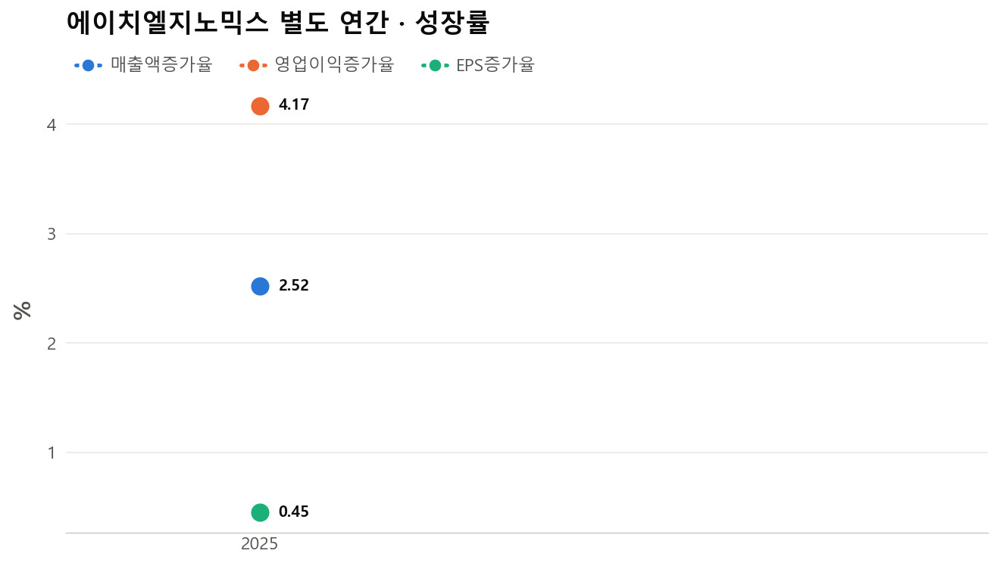
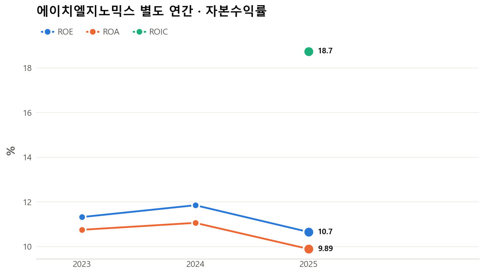
- 퀀트자체 퀀트 전략 리포트 순위 (Quant_report 20261113)
- 공시2026-11-13DART · 분기보고서 (2026.09)
지난 1년 사건
지난 1년 무슨 일이 있었나?
IPO는 흥행(수요예측 714.5대 1, 청약증거금 4.6조원)했으나 상장 후 공모가 대비 -69%까지 밀렸고, 2공장 산단 승인이 주요 진전입니다.12345
- IPO 수요는 매우 높았습니다
- 상장 후 주가는 크게 밀렸습니다
- 시장 환경이 신규상장주에 우호적이지 않았습니다
- 주주 소통과 2공장이 현안입니다
- 증권사 커버리지는 확인되지 않습니다
- 뉴스2026-07-10더바이오 · 에이치엘지노믹스, 공모가 최상단 2만1500원…수요예측 경쟁률 714.5대 1
- 뉴스2026-07-14더바이오 · 에이치엘지노믹스, 청약 경쟁률 667.2 대 1…증거금 4조6000억원
- 기본KRX·KIND 상장법인 정보 (시장·업종·시가총액)
- 뉴스2026-07-10머니투데이 · 에이치엘지노믹스, 공모가 2만1500원 확정…이달 13~14일 청약 - 머니투데이
- 공시2026-10-30DART · [기재정정]신규시설투자등
- 뉴스2026-07-09스마트투데이 · [에이치엘지노믹스 IPO] 19년 연속 흑자·영업이익률 30%…VC 물량 '제로'로 수급 부담 덜었다
- 뉴스2026-07-24연합뉴스 · [특징주] 상장날 급락장에 '날벼락'…에이치엘지노믹스 31%↓(종합)
- 뉴스2026-07-24머니투데이 · 에이치엘지노믹스, 상장일 주가변동 확대…17% 급등 터치 - 머니투데이
- 뉴스2026-10-02뉴시스 · 에이치엘지노믹스, 상장 두달새 60%↓…주주 불만에 기업가치 제고 '시...
- 뉴스2026-10-22매일경제 · “공모가만 지켜줘도 소원이”…널뛰는 증시, 새내기 80% 아래로 떨어...
- 뉴스2026-09-09머니투데이 · "바이오는 못 믿어" 반짝 흥행 후 침몰→반토막…문제는?
- 뉴스2026-08-31국민일보 · 코스닥 다시 시험대… 빚투 부담 커졌다
- 뉴스2026-10-02뉴시스 · 에이치엘지노믹스, 상장 두달새 60%↓…주주 불만에 기업가치 제고 '시동'
- 뉴스2026-10-12디지털투데이 · 에이치엘지노믹스, 11월 27일 임시주주총회 소집 결의
- 공시2026-10-12DART · 주주총회소집결의 (임시주주총회)
- 뉴스2026-10-23주달 · 에이치엘지노믹스 투자분석 2026. 10. 23
- 뉴스2026-10-09주달 · 에이치엘지노믹스 투자분석 2026. 10. 09
- 뉴스2026-08-21주달 · 에이치엘지노믹스 투자분석 2026. 08. 21
- 뉴스2026-05-12뉴스톱 · "코스닥 기업 60%, 상장 후 분석 보고서 한 번도 없어"
앞으로 볼 것
앞으로 무엇을 확인해야 하나?
2공장 진행, 고객 구조 변화, 쿼드메디슨 백신 사업화, 임시주총·주주환원 방향이 핵심 변수입니다.123
- 2공장이 성장의 열쇠입니다
- 고객 구조가 바뀌는지 확인해야 합니다
- 신사업 계약이 실제로 나오는지 봐야 합니다
- 주주환원·소통 변화가 주가 변수입니다
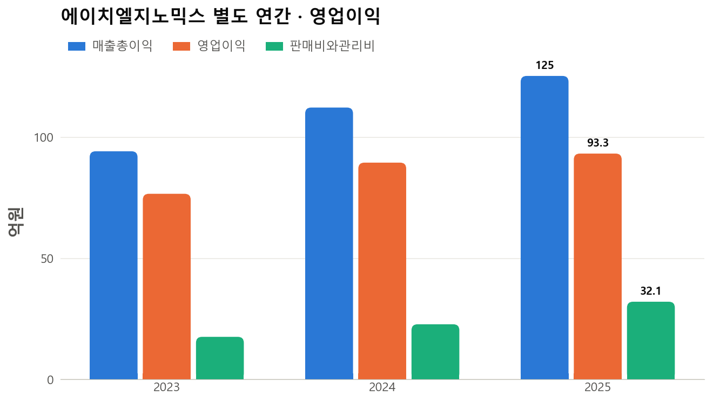
- 공시2026-10-30DART · [기재정정]신규시설투자등
- 공시2026-11-13DART · 분기보고서 (2026.09)
- 뉴스2026-10-12디지털투데이 · 에이치엘지노믹스, 11월 27일 임시주주총회 소집 결의
- 뉴스2026-08-14MTN 머니투데이방송 · 에이치엘지노믹스, 제2공장 내년 말 준공…원가절감·수출 확대 기대
- 뉴스2026-08-18데이터투자 · 에이치엘지노믹스, GSK 협력사와 ‘마이크로니들’ 독점생산·판매 라인 구축··가동률 116%에 CAPA 2배 확대
- 뉴스2026-07-08약업신문 · 에이치엘지노믹스 "제2공장 기반 CDMO 진출"…글로벌 API 기업 도약 시동
- 뉴스2026-10-02뉴시스 · 에이치엘지노믹스, 상장 두달새 60%↓…주주 불만에 기업가치 제고 '시...
- 재무FnGuide 재무제표 (연간·분기, 개별기업 분석 엑셀)
- 재무FnGuide 컨센서스 추정치
강세 논리 vs 약세 논리
▲ 강세
▼ 약세
- 고객 쏠림 심화
- 성장 정체
- 자본 증가와 투자 부담
- 수급·주주 신뢰
- 기본KRX·KIND 상장법인 정보 (시장·업종·시가총액)
- 재무FnGuide 재무제표 (연간·분기, 개별기업 분석 엑셀)
- 공시2026-10-30DART · [기재정정]신규시설투자등
- 퀀트자체 퀀트 전략 리포트 순위 (Quant_report 20261113)
- 뉴스2026-08-05서울경제 · “공모자금 380억 2공장에…생산능력 2배 확장”
- 뉴스2026-07-09스마트투데이 · [에이치엘지노믹스 IPO] 19년 연속 흑자·영업이익률 30%…VC 물량 '제로'로 수급 부담 덜었다
- 뉴스2026-08-18데이터투자 · 에이치엘지노믹스, GSK 협력사와 ‘마이크로니들’ 독점생산·판매 라인 구축··가동률 116%에 CAPA 2배 확대
- 뉴스2026-07-09매경헬스 · 에이치엘지노믹스 "공장 가동률 120% 넘어"…코스닥 상장으로 생산능력 확대
- 공시2026-11-13DART · 분기보고서 (2026.09)
- 뉴스2026-06-25FETV · [에이치엘지노믹스 IPO] ②최대 매출처는 '최대주주', 공장 증설로 다변화
- 뉴스2026-10-22매일경제 · “공모가만 지켜줘도 소원이”…널뛰는 증시, 새내기 80% 아래로 떨어...
- 뉴스2026-10-02뉴시스 · 에이치엘지노믹스, 상장 두달새 60%↓…주주 불만에 기업가치 제고 '시...
- 뉴스2026-07-30디지털투데이 · 에이치엘지노믹스 10%이상주주 한림제약, 소유 주식 수량 514만5000주 보고…소유 지분율 66.11%
시나리오와 무효화 조건
| 시나리오 | 조건 | 의미 |
|---|---|---|
| 강세 | 2공장이 일정대로 진행되고 매출처 다변화와 주주환원이 가시화돼 시장이 PER 10배를 부여 | 순이익 약 84.5억 유지 가정 시 시총 약 845억, 약 778만주 기준 약 10,900원(+64%, 추정)123 |
| 기본 | 실적은 정체하고 2공장 완공 전까지 PER 6~8배 범위에서 거래 | 시총 약 507~676억, 주당 약 6,500~8,700원(추정)13 |
| 약세 | 주요 고객 발주 감소나 마진 하락으로 순이익이 약 70억으로 줄고 PER 5배 적용 | 시총 약 350억, 주당 약 4,500원(-32%, 추정)13 |
이렇게 되면 판단을 바꿔야 합니다
- 분기 영업이익률이 30% 아래로 내려가는 흐름이 이어지면 높은 수익성 전제가 약해집니다1
- 상위 2개 고객 비중이 더 높아지거나 주요 고객 발주가 줄면 쏠림 위험이 현실화됩니다4
- 2공장 투자금액이 548.5억을 크게 넘거나 투자기간이 길어지면 현금과 일정 전제가 바뀝니다5
- 영업현금흐름이 순이익을 계속 밑돌면 이익의 질 판단을 바꿔야 합니다1
- 임시주총 안건에 증자 등 희석성 내용이 나오면 저평가 논리가 약해집니다6
- 쿼드메디슨 백신 사업화 계약이 지연·무산되면 100억 무형자산의 손상 가능성을 점검해야 합니다4
- 반대로 배당·자사주 등 주주환원이 구체화되면 약세 논리 일부가 완화됩니다17
앞으로 확인할 일정
- 2026-11-27임시주주총회 안건과 결과 확인68
- 2026-11~2027-034분기·연간 실적 공시와 2025년 대비 성장 전환 여부1
- 2026-10-30~2028-01-152공장 공정과 투자금액 변동 공시5
- 2026~2027쿼드메디슨 백신 후속 사업화 계약 체결 여부4
- 수시한림제약 연간 발주 이후 고객 비중 변화와 신규 매출처 확대4
- 수시기업가치 제고 방안·배당 정책 발표 여부7
- 재무FnGuide 재무제표 (연간·분기, 개별기업 분석 엑셀)
- 뉴스2026-07-30디지털투데이 · 에이치엘지노믹스 10%이상주주 한림제약, 소유 주식 수량 514만5000주 보고…소유 지분율 66.11%
- 기본KRX·KIND 상장법인 정보 (시장·업종·시가총액)
- 공시2026-11-13DART · 분기보고서 (2026.09)
- 공시2026-10-30DART · [기재정정]신규시설투자등
- 뉴스2026-10-12디지털투데이 · 에이치엘지노믹스, 11월 27일 임시주주총회 소집 결의
- 뉴스2026-10-02뉴시스 · 에이치엘지노믹스, 상장 두달새 60%↓…주주 불만에 기업가치 제고 '시...
- 공시2026-11-12DART · 주주총회소집공고
지난 1년 주요 뉴스
- 2026-04-06코스닥 예심 청구
한림제약 원료의약품 자회사의 상장 절차가 시작됐습니다1 - 2026-06-15상장예심 승인
상장 일정이 확정 단계에 들어갔습니다 - 2026-07-10공모가 21,500원 확정, 수요예측 714.5대 1
공모가 상단으로 결정돼 이후 하락폭의 기준점이 됐습니다23 - 2026-07-14일반청약 667.2대 1, 증거금 4.6조원
청약 열기는 높았으나 상장 후 흐름은 달랐습니다4 - 2026-07-24코스닥 상장, 첫날 변동성 확대
장중 -31%와 +17%가 보도될 만큼 큰 변동성이 나타났습니다56 - 2026-08-05공모자금 380억 2공장 투입
공모자금의 쓰임이 생산능력 확대임을 보여 줍니다7 - 2026-08-14제2공장 내년 말 준공 보도
외형 성장 시점이 2027년 말 이후로 예상됩니다8 - 2026-08-18GSK 협력사와 마이크로니들 생산라인 보도
신사업 확장 신호이나 매출 기여 규모는 자료에 없습니다9 - 2026-09-09바이오 IPO 종목 반토막 보도
신규상장 바이오 전반의 투자심리 악화를 보여 줍니다10 - 2026-10-02상장 두 달새 60%↓, 주주 불만
주주 소통 문제가 불거졌고 기업가치 제고 시동이 보도됐습니다11 - 2026-10-12임시주주총회(11/27) 소집 결의
안건은 확인되지 않아 주주 소통의 계기로 지켜볼 일정입니다1213 - 2026-10-30산업단지 최종 승인, 투자 시작일 정정
2공장 착공이 가능해졌으나 일정이 약 67일 늦어졌습니다(추정)14 - 2026-11-02용인시 산단 계획 승인(총사업비 275억원)
산단 준공 목표는 2029년으로 보도돼 공장 일정과 범위 확인이 필요합니다1516 - 2026-11-133분기 분기보고서 제출
3분기 누적 매출 220.7억과 고객 집중도 상승이 확인됐습니다17
- 뉴스2026-04-06더바이오 · 한림제약 '알짜' 원료 자회사 '에이치엘지노믹스' 코스닥 예심 청구
- 뉴스2026-07-10머니투데이 · 에이치엘지노믹스, 공모가 2만1500원 확정…이달 13~14일 청약 - 머니투데이
- 뉴스2026-07-10더바이오 · 에이치엘지노믹스, 공모가 최상단 2만1500원…수요예측 경쟁률 714.5대 1
- 뉴스2026-07-14더바이오 · 에이치엘지노믹스, 청약 경쟁률 667.2 대 1…증거금 4조6000억원
- 뉴스2026-07-24연합뉴스 · [특징주] 상장날 급락장에 '날벼락'…에이치엘지노믹스 31%↓(종합)
- 뉴스2026-07-24머니투데이 · 에이치엘지노믹스, 상장일 주가변동 확대…17% 급등 터치 - 머니투데이
- 뉴스2026-08-05서울경제 · “공모자금 380억 2공장에…생산능력 2배 확장”
- 뉴스2026-08-14MTN 머니투데이방송 · 에이치엘지노믹스, 제2공장 내년 말 준공…원가절감·수출 확대 기대
- 뉴스2026-08-18데이터투자 · 에이치엘지노믹스, GSK 협력사와 ‘마이크로니들’ 독점생산·판매 라인 구축··가동률 116%에 CAPA 2배 확대
- 뉴스2026-09-09머니투데이 · "바이오는 못 믿어" 반짝 흥행 후 침몰→반토막…문제는?
- 뉴스2026-10-02뉴시스 · 에이치엘지노믹스, 상장 두달새 60%↓…주주 불만에 기업가치 제고 '시...
- 뉴스2026-10-12디지털투데이 · 에이치엘지노믹스, 11월 27일 임시주주총회 소집 결의
- 공시2026-10-12DART · 주주총회소집결의 (임시주주총회)
- 공시2026-10-30DART · [기재정정]신규시설투자등
- 뉴스2026-11-02연합뉴스 · 용인시, 원삼 HL지노믹스 산단 계획 승인…2029년 준공 목표
- 뉴스2026-11-02Chosunbiz · 경기 용인시, HL지노믹스 일반산단 승인…총사업비 275억원
- 공시2026-11-13DART · 분기보고서 (2026.09)
수집한 뉴스 전체 · 112건
지난 1년 주요 공시
- 2026-11-13분기보고서 (2026.09) — 매출처 구성
상위 2개 고객 비중이 2025년 73.6%에서 89.7%로 올랐고 고객3·기타는 26.4%에서 10.4%로 줄었습니다(합산·추정). 다변화 계획과 달리 쏠림이 심해졌습니다1 - 2026-11-13분기보고서 (2026.09) — 제품 구성
심혈관계가 45.2%에서 51.0%로 늘었고 호흡기계 매출은 2025년에 전년 대비 약 -31%(추정)였습니다. 3개 제품이 매출의 66%입니다(추정)1 - 2026-11-13분기보고서 (2026.09) — 수주 구조
한림제약이 연간 발주로 전환해 가시성은 좋아졌으나, 수주잔고는 단기 반복 발주 중심이라 장기 확정 물량은 아닙니다1 - 2026-11-13분기보고서 (2026.09) — 쿼드메디슨 독점공급권
백신 3종 독점공급권 대가 100억원을 무형자산으로 계상했고, 후속 사업화 계약은 2026·2027년 추진 중입니다. 계약이 성사되지 않으면 손상 점검이 필요합니다(추정)1 - 2026-11-13분기보고서 (2026.09) — 우발부채
피소 1건에 소송가액 1억원으로 6월말 자본의 약 0.1%(추정)여서 영향은 작습니다. 25억 한도대출은 미사용입니다12 - 2026-10-30[기재정정]신규시설투자등
투자금액 548.49억은 자기자본의 45.42%이며 시작일이 8월 24일에서 10월 30일로 늦어졌습니다. 부지 기지출 약 121억은 별도입니다3 - 2026-08-12신규시설투자등
2공장 신축·설비투자를 이사회가 결의한 공시로, 이후 정정 공시의 원본입니다. 투자 목적은 생산능력 확대입니다43 - 2026-10-12주주총회소집결의 (임시주주총회)
임시주총은 11월 27일 열리며 소집공고와 기준일 설정이 이어졌습니다. 안건은 본문이 없어 확인되지 않습니다5678 - 2026-08-14반기보고서 (2026.06)
2분기 매출 66.1억(+6.2%), 영업이익 21.2억(+6.7%), 부채비율 7.61%가 확인됩니다. 본문 발췌는 없습니다92
- 공시2026-11-13DART · 분기보고서 (2026.09)
- 재무FnGuide 재무제표 (연간·분기, 개별기업 분석 엑셀)
- 공시2026-10-30DART · [기재정정]신규시설투자등
- 공시2026-08-12DART · 신규시설투자등
- 공시2026-10-12DART · 주주총회소집결의 (임시주주총회)
- 공시2026-10-12DART · 주주명부폐쇄기간또는기준일설정
- 공시2026-11-12DART · 주주총회소집공고
- 뉴스2026-10-12디지털투데이 · 에이치엘지노믹스, 11월 27일 임시주주총회 소집 결의
- 공시2026-08-14DART · 반기보고서 (2026.06)
공시 전체 · 7건 (DART)
| 날짜 | 공시 |
|---|---|
| 2026-11-13 | 분기보고서 (2026.09) |
| 2026-11-12 | 주주총회소집공고 |
| 2026-10-30 | [기재정정]신규시설투자등 |
| 2026-10-12 | 주주명부폐쇄기간또는기준일설정 |
| 2026-10-12 | 주주총회소집결의 (임시주주총회) |
| 2026-08-14 | 반기보고서 (2026.06) |
| 2026-08-12 | 신규시설투자등 |
증권가 시각
한경컨센서스 리포트 전체 · 0건
| 날짜 | 증권사 | 리포트 | 목표주가 | 의견 |
|---|
선진짱 주식공부방 · 0건
선진짱 채널 '선진짱 주식공부방': 1년간 언급 9건 중 이 기업이 주제인 리포트성 메시지 0건 (PDF 0건 본문 분석)
표
컨센서스 추정치 (FnGuide)
| 연간 2023/12 | 연간 2024/12 | 연간 2025/12 | 연간 2026/12(E) | 연간 2026/09(E) | 분기 2025/06 | 분기 2025/09 | 분기 2025/12 | 분기 2026/03 | 분기 2026/06 | 분기 2026/09(E) | 분기 2026/12(E) | 분기 2027/03(E) | |
|---|---|---|---|---|---|---|---|---|---|---|---|---|---|
| 매출액 | |||||||||||||
| 영업이익 | |||||||||||||
| 영업이익(발표기준) | |||||||||||||
| 당기순이익 | |||||||||||||
| 당기순이익(지배) | |||||||||||||
| 당기순이익(비지배) | |||||||||||||
| 자산총계 | |||||||||||||
| 부채총계 | |||||||||||||
| 자본총계 | |||||||||||||
| 자본총계(지배) | |||||||||||||
| 자본총계(비지배) | |||||||||||||
| 자본금 | |||||||||||||
| 부채비율 | |||||||||||||
| 유보율 | |||||||||||||
| 영업이익률 | |||||||||||||
| 순이익률(지배) | |||||||||||||
| ROA | |||||||||||||
| ROE | |||||||||||||
| EPS | |||||||||||||
| BPS | |||||||||||||
| 현금DPS | 0 | 0 | 0 | 0 | 0 | 0 | 0 | ||||||
| PER | |||||||||||||
| PBR | |||||||||||||
| 발행주식수(보통주) | 600,000 | 600,000 | 6,000,000 | 600,000 | 600,000 | 6,000,000 | 6,000,000 | 6,000,000 | |||||
| 현금배당수익률 |
동종업종 비교
| 본인 | 종목명 | 종목코드 | 업종 | 종가 | 시가총액 | PER | PBR | PSR | ROE | 영업이익률 | 매출증가_YOY | 영익증가_YOY | 부채비율 | 배당수익률 | S-RIM_주가 |
|---|---|---|---|---|---|---|---|---|---|---|---|---|---|---|---|
| 삼성바이오로직스 | 207,940 | 기초 의약물질 제조업 | 1,411,000 | 653,165 | 32.92 | 7.81 | 14.37 | 23.73 | 64.26 | 30.2 | 22.9 | 51.31 | 0 | 535,818 | |
| 셀트리온 | 68,270 | 기초 의약물질 제조업 | 214,000 | 496,636 | 31.41 | 2.75 | 10.14 | 8.8 | 31.38 | 45 | 86.3 | 31.33 | 0.33 | 85,546 | |
| SK바이오사이언스 | 302,440 | 기초 의약물질 제조업 | 39,000 | 30,598 | -35.76 | 1.52 | 4.64 | -4.85 | -19.35 | -3.8 | -57.9 | 48.58 | 0 | -15,508 | |
| 휴젤 | 145,020 | 기초 의약물질 제조업 | 192,300 | 24,067 | 14.75 | 2.21 | 5.02 | 14.97 | 43.69 | 25.1 | -1.1 | 9.57 | 0 | 162,656 | |
| 에이비엘바이오 | 298,380 | 기초 의약물질 제조업 | 40,650 | 22,759 | -28.75 | 13.08 | 66.39 | -45.86 | -589.74 | -74 | -141.3 | 57.37 | 0 | -17,810 | |
| 케어젠 | 214,370 | 기초 의약물질 제조업 | 28,150 | 15,121 | 66.11 | 6.92 | 20.19 | 10.46 | 21.8 | 3.7 | -29.6 | 10.34 | 1.42 | 5,322 | |
| 네이처셀 | 7,390 | 기초 의약물질 제조업 | 21,650 | 13,950 | -514.95 | 22.16 | 68.02 | -4.3 | -20.93 | -3.2 | 144.6 | 40.69 | 0 | -525 | |
| 차바이오텍 | 85,660 | 기초 의약물질 제조업 | 7,500 | 6,973 | -42.45 | 0.68 | 0.53 | 3.43 | -5.73 | 5.9 | 35.8 | 178.44 | 0 | 4,735 | |
| 메디톡스 | 86,900 | 기초 의약물질 제조업 | 71,500 | 5,218 | 34.44 | 1.38 | 2.08 | 4.09 | 6.9 | 11.4 | -24.6 | 50.75 | 1.68 | 26,573 | |
| 오름테라퓨틱 | 475,830 | 기초 의약물질 제조업 | 15,000 | 3,263 | 17.63 | 1.75 | 7,959 | 9.95 | -1,140,612 | 500 | 53.6 | 56.98 | 0 | 10,633 | |
| 메디포스트 | 78,160 | 기초 의약물질 제조업 | 8,130 | 3,187 | -13.44 | 1.16 | 4.26 | -8.45 | -102.53 | 5.3 | 28.1 | 104.21 | 0 | -7,375 | |
| 아이티켐 | 309,710 | 기초 의약물질 제조업 | 21,000 | 2,684 | -15.23 | 4.47 | 5.06 | -29.56 | -11.33 | -23.9 | 282.5 | 206.07 | 0 | -17,337 | |
| 엔케이젠바이오텍코리아 | 182,400 | 기초 의약물질 제조업 | 3,670 | 2,655 | -131.18 | 40.28 | 32.66 | -30.71 | -35.43 | 5.8 | -85.6 | 92.64 | 0 | -350 | |
| 콜마비앤에이치 | 200,130 | 기초 의약물질 제조업 | 7,110 | 2,046 | -137.96 | 0.53 | 0.38 | -0.41 | 6.03 | -22.5 | -5.1 | 49.13 | 0.84 | -682 | |
| 바이오플러스 | 99,430 | 기초 의약물질 제조업 | 3,045 | 1,877 | 9.49 | 0.94 | 1.89 | 7.76 | 17.58 | 22.9 | 201.5 | 48.06 | 2.3 | 3,153 | |
| 지놈앤컴퍼니 | 314,130 | 기초 의약물질 제조업 | 3,200 | 1,720 | -3.98 | 2.12 | 7.03 | -57.48 | -119.03 | 7.7 | 7.6 | 51.28 | 0 | -10,868 | |
| 강스템바이오텍 | 217,730 | 기초 의약물질 제조업 | 1,791 | 1,685 | -15.59 | 2.98 | 116.45 | -19.11 | -755.96 | -37.7 | 36.7 | 20.98 | 0 | -1,437 | |
| 코오롱생명과학 | 102,940 | 기초 의약물질 제조업 | 12,030 | 1,575 | 4.55 | 0.23 | 0.74 | 4.97 | 6.7 | -4.5 | -162.4 | 55.55 | 0 | 33,072 | |
| 한국비엔씨 | 256,840 | 기초 의약물질 제조업 | 2,235 | 1,529 | -23.94 | 0.66 | 1.68 | -2.08 | -6.23 | -0.1 | -123 | 17.61 | 3.13 | -880 | |
| 쎌바이오텍 | 49,960 | 기초 의약물질 제조업 | 13,780 | 1,295 | 7.71 | 0.95 | 2.14 | 12.29 | 16.88 | 32.8 | 28 | 5.99 | 4.35 | 22,345 |
퀀트 전략 순위 (상위 % 순)
| 구분 | 전략/지표 | 값 | 순위 | 순위대상 종목수 | 상위 % |
|---|---|---|---|---|---|
| 별도(sq) | 영업이익률 | 33.14 | 95 | 1,522 | 6.2 |
| 별도(sq) | 자기자본비율 | 92.93 | 160 | 2,499 | 6.4 |
| 별도(sq) | 순이익률 | 29.38 | 229 | 1,544 | 14.8 |
| 별도(sq) | NCAV | 0.91 | 263.5 | 1,547 | 17 |
| 별도(sq) | 현금창출능력 | 0.24 | 314.5 | 1,697 | 18.5 |
| 별도(sq) | 유보율 | 2,833 | 507 | 2,394 | 21.2 |
| 별도(sq) | Value | 6.83 | 714 | 1,598 | 44.7 |
| 별도(sq) | Magic | 2,022 | 821 | 1,599 | 51.3 |
| 별도(sq) | VIP_Value | 98.73 | 718 | 1,305 | 55 |
| 별도(sq) | 유동자산 | 538.54 | 1,469 | 2,498 | 58.8 |
| 별도(sq) | SuperValue | 30.06 | 776 | 1,305 | 59.5 |
| 별도(sq) | 기말현금및현금성자산 | 49.35 | 1,814 | 2,500 | 72.5 |
| 별도(sq) | 배당수익률 | 0 | 1,872 | 2,509 | 74.6 |
| 별도(sq) | 매출증가_YOY | 6.2 | 1,355 | 1,624 | 83.4 |
| 별도(sq) | 슈퍼퀀트 | 976.38 | 408 | 468 | 87.2 |
| 별도(sq) | 영익증가_YOY | 6.7 | 1,064 | 1,153 | 92.3 |
| 별도(sq) | PEG | 2.17 | 1,194 | 1,292 | 92.4 |
| 별도(sq) | 순익증가_YOY | 0.2 | 1,066 | 1,068 | 99.8 |
| 연결(lq) | 주도주 | 264 | |||
| 연결(lq) | Rule_of_40 | 746 | |||
| 연결(lq) | 영업이익률 | 1,340 | |||
| 연결(lq) | PEG | 722 | |||
| 연결(lq) | 배당수익률 | 2,097 | |||
| 연결(lq) | 매출증가_YOY | 1,460 | |||
| 연결(lq) | 영익증가_YOY | 1,020 | |||
| 연결(lq) | 순익증가_YOY | 919 | |||
| 연결(lq) | 매출증가_QOQ | 1,530 | |||
| 연결(lq) | 영익증가_QOQ | 1,047 | |||
| 연결(lq) | 순익증가_QOQ | 929 | |||
| 연결(lq) | Value | 1,289 | |||
| 연결(lq) | Magic | 1,304 | |||
| 연결(lq) | NCAV | 1,206 | |||
| 연결(lq) | SuperValue | 1,053 | |||
| 연결(lq) | VIP_Value | 1,053 | |||
| 연결(lq) | 자기자본비율 | 2,053 | |||
| 연결(lq) | 현금창출능력 | 1,419 | |||
| 연결(lq) | 지배주주순이익률 | 1,287 | |||
| 연결(lq) | 유동자산 | 2,052 | |||
| 연결(lq) | 기말현금및현금성자산 | 2,056 | |||
| 연결(lq) | 유보율 | 1,971 | |||
| 연결(lq) | 자본잠식지수 | 53 | |||
| 연결(lq) | 슈퍼퀀트 | 442 | |||
| 연결(lq) | 고속성장 | 283 | |||
| 별도(sq) | 주도주 | 0.5 | 168 | ||
| 별도(sq) | Rule_of_40 | 12.9 | 761 | ||
| 별도(sq) | 매출증가_QOQ | -21.7 | 1,769 | ||
| 별도(sq) | 영익증가_QOQ | -26.8 | 1,212 | ||
| 별도(sq) | 순익증가_QOQ | -33.2 | 1,085 | ||
| 별도(sq) | 자본잠식지수 | 849.89 | 73 | ||
| 별도(sq) | 고속성장 | 275 |
그래프 전체
기존 개별기업 분석 코드의 그래프입니다. 누르면 크게 열립니다.
별도 · 분기/TTM · 4개
별도 · 연간 · 27개
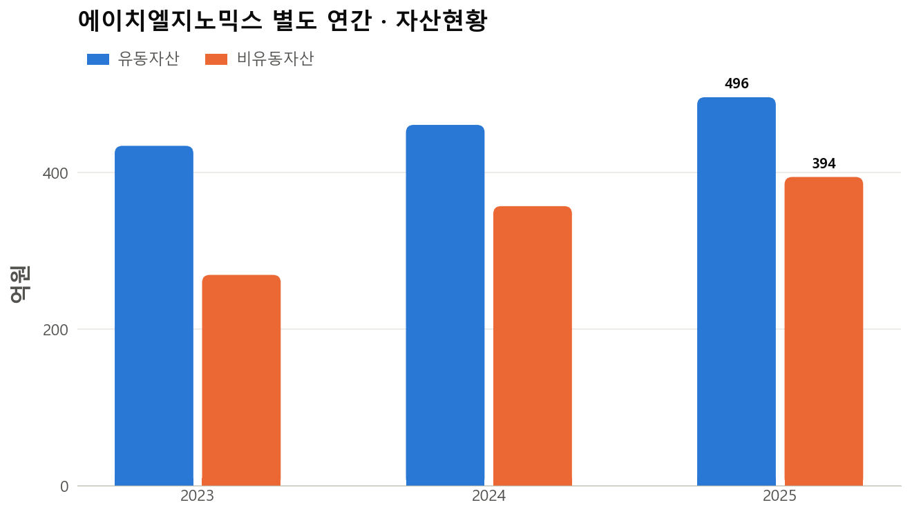
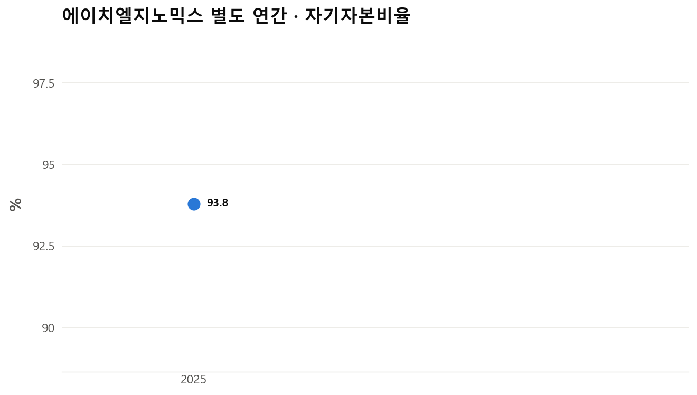
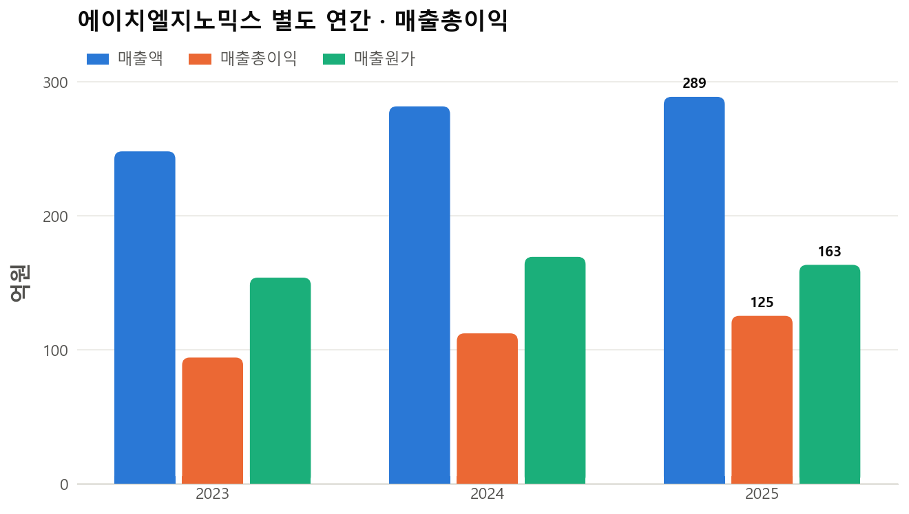
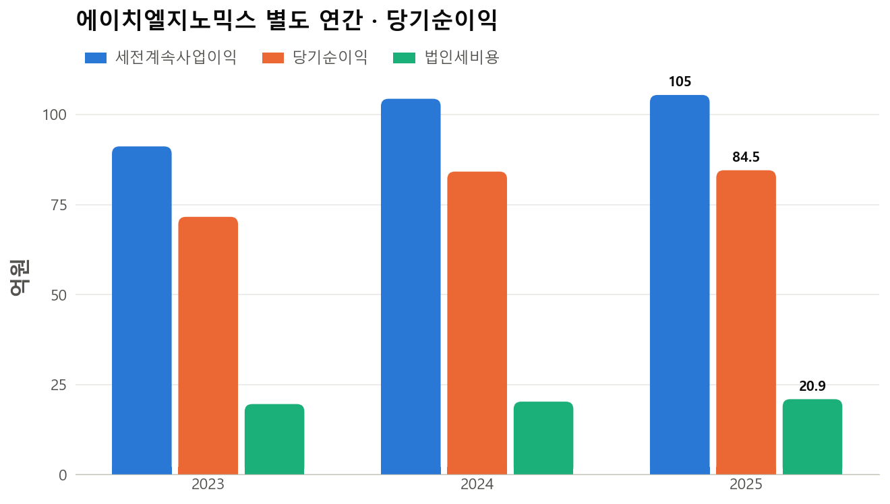
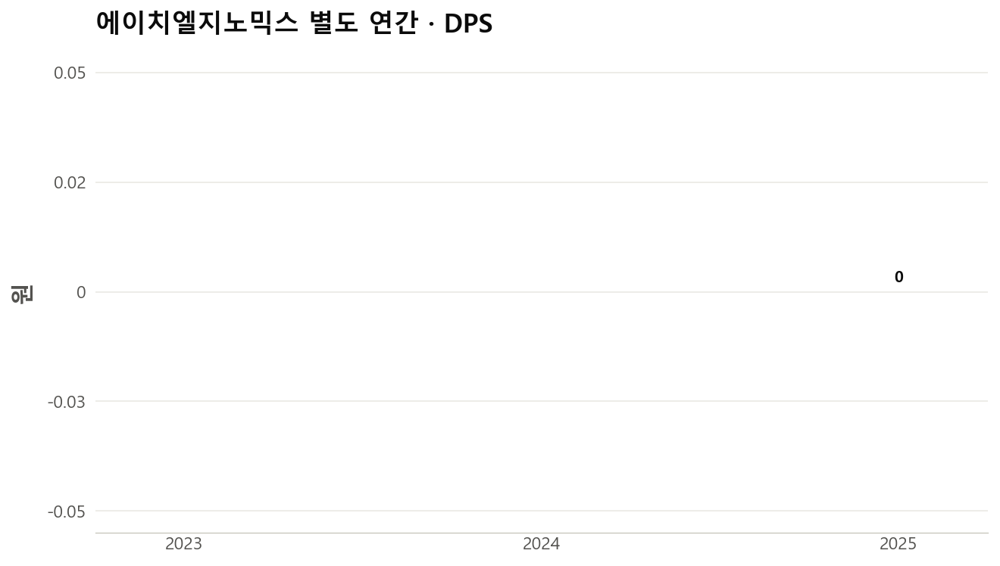
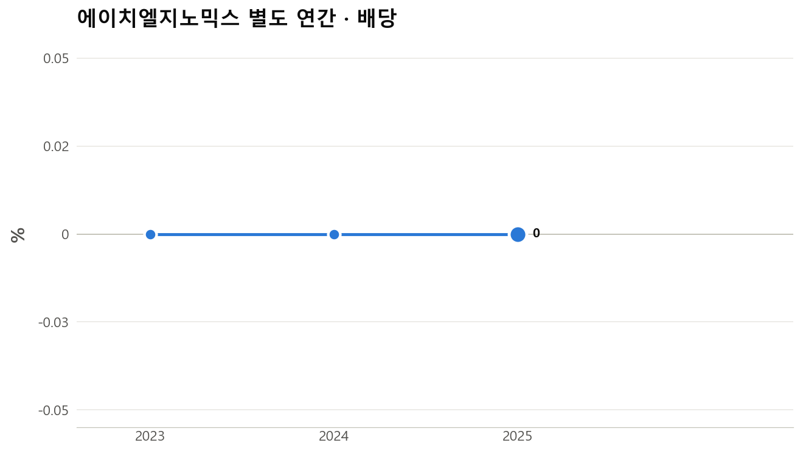
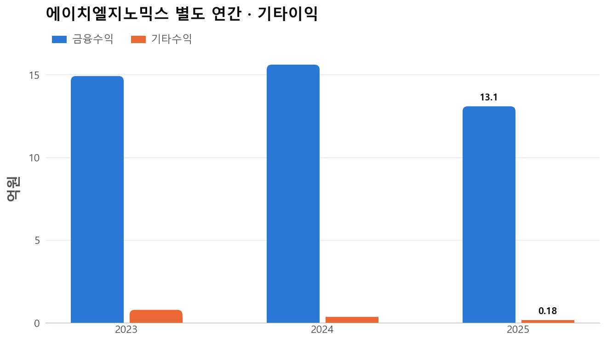
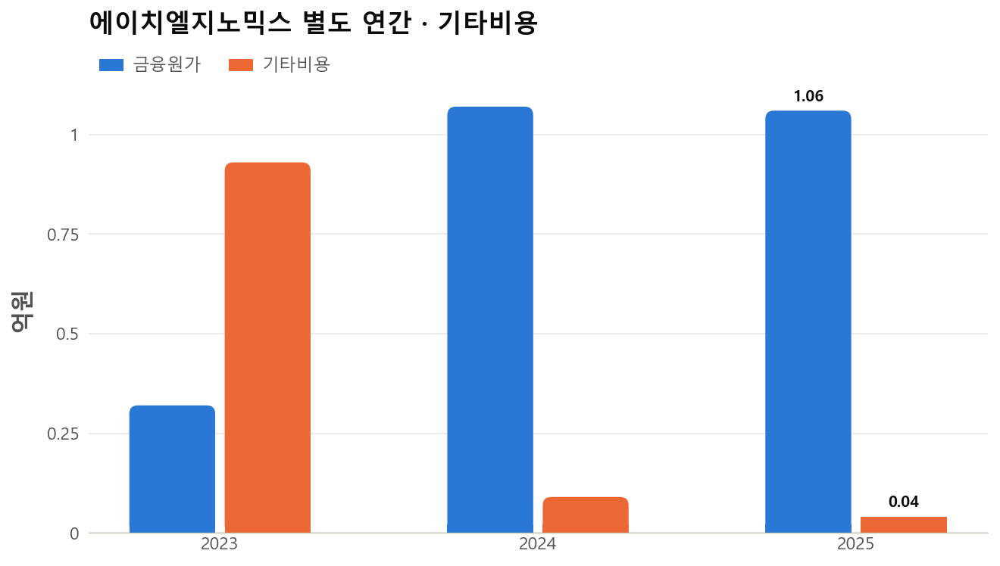
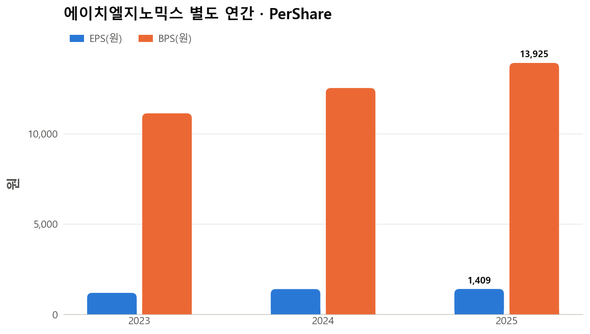
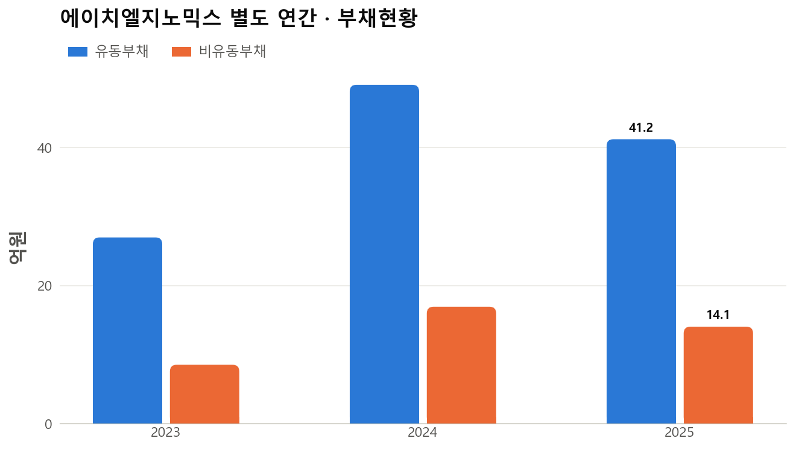
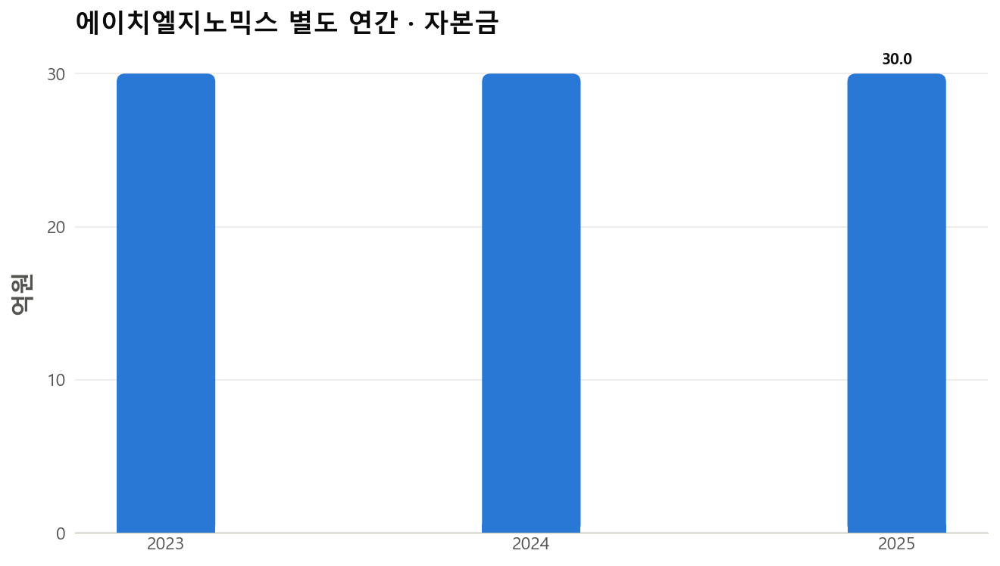
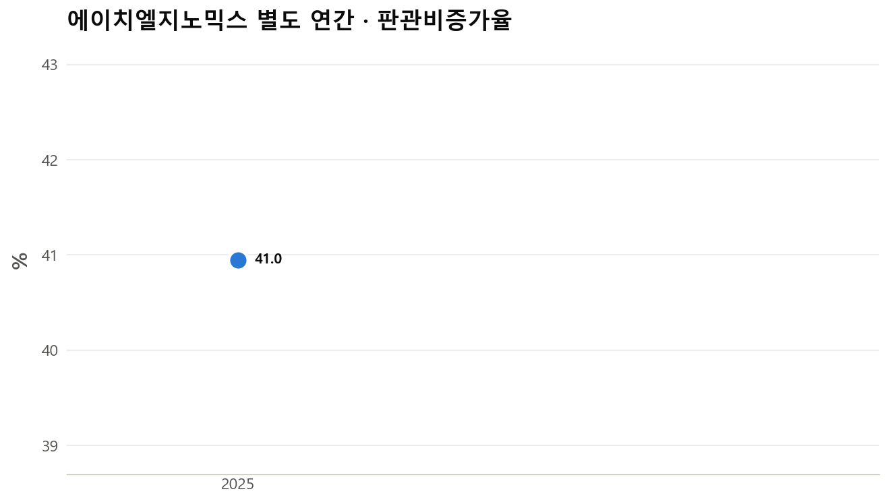
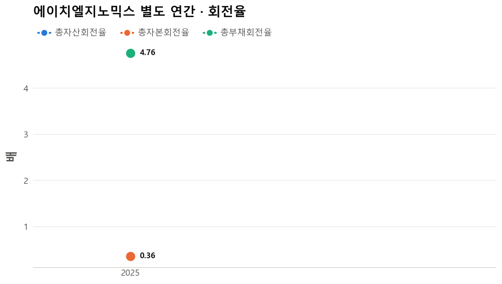
자료
- 재무·그래프: 기존 개별기업 분석 (32개 그래프)
- 네이버 증권 20건(최근 60일) + 구글 뉴스 92건(월별 1년)
- DART 7건 (정기·주요사항·거래소·자사주 등, 지분변동 보고 제외) · 공시 본문 2건 읽음 (원문 저장소 1건 · 새로 받음 0건) · 정기보고서 '분기보고서 (2026.09)' 핵심 장
- 한경컨센서스 리포트 0건 (최근 0건 본문 분석)
- 선진짱 채널 '선진짱 주식공부방': 1년간 언급 9건 중 이 기업이 주제인 리포트성 메시지 0건 (PDF 0건 본문 분석)
- 배당소득 분리과세: 판단 불가
- 인용 검증: 뉴스·공시·리포트·채널 인용 172건을 원문과 대조, 근거 불충분 1건 제거